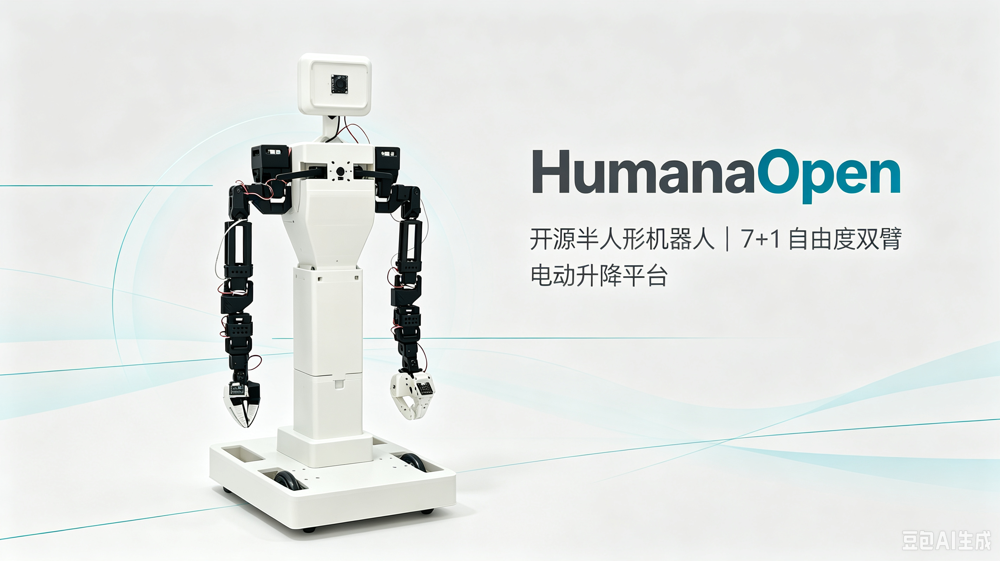

Contact & Cooperation
Reach out to the team.
Product Communication
Scan the QR code to reach our product team

Open-source semi-humanoid robot — 7-DOF dual arms, differential drive, leadscrew lift.

Everything you need for embodied AI research and development.
Two fully articulated 7-DOF arms with high-torque serial-bus servos and integrated grippers for precise manipulation tasks.
Robust differential-drive locomotion using high-torque wheel servos for smooth, omnidirectional movement.
Leadscrew-based lift with 3–200 mm range. Self-locking design ensures zero-persistence — no re-homing needed.
Pan and tilt head unit for dynamic camera positioning and environmental awareness.
Full vision pipeline supporting LeRobot ACT and SmolVLA policies. 3–4× 720p cameras for rich spatial perception.
ZMQ-based dual-machine architecture for teleoperation, data collection, training, and real-time inference. Display via Rerun / Foxglove.
Detailed hardware and software specifications.
| Component | Specification |
|---|---|
| Arms | 2× 7-DOF + gripper (serial-bus servos) |
| Leader Arms | High-torque serial-bus servos |
| Head | Pan / Tilt |
| Lift | Leadscrew, 3–200 mm, self-locking, zero-persistence |
| Base | Differential drive (wheel servos) |
| Cameras | 3–4× 720p |
| Controller | Raspberry Pi 5 (4 GB) or Jetson Orin Nano Super (8 GB) |
| Software | LeRobot + PyTorch |
| Visualization | Rerun / Foxglove |
| Estimated BOM | ≈ 5,718 RMB |
From teleoperation to autonomous inference in four steps.
Leader-arm control via ZMQ
Record demonstration data
ACT / SmolVLA policy
Autonomous visual control
Building the complete open-source ecosystem.
These items are actively being developed. Stay tuned!
Everything is open. Clone, build, and contribute.
Reach out to the team.
Scan the QR code to reach our product team